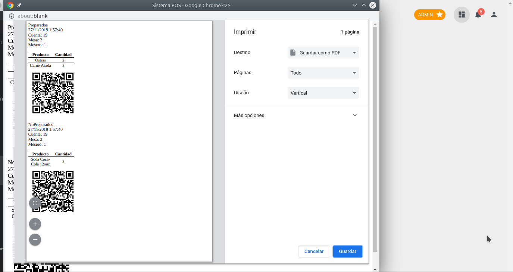
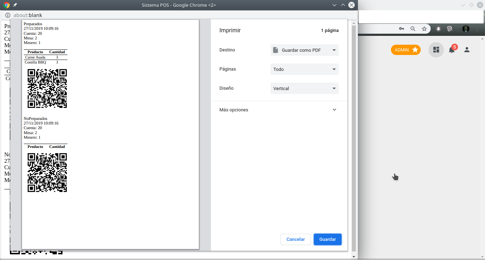

Manual de usuario
A continuación se mostrará un manual rápido de usuario, con las principales opciones para el uso del sistema.
Configuracion de Productos
-
Agregar producto
-
Seleccionar la opcion "Productos" de la barra lateral izquierda.
-
Click en el boton "Nuevo producto".
-
Llenar los detalles del producto y dar click en "Guardar".
-
Llenar los detalles del producto y dar click en "Guardar".
-
-
Modificar producto
-
En la columna Actions, Click en el icono con forma de lapiz del producto que desea modificar".

-
Modificar los campos del producto deseados y dar click en "Guardar".
-
Consola principal
-
Dashboard Principal
El sistema inicia con la ventana de loggin donde se debe ingresar sus credenciales.
El dashboard principal se compone de varias partes.
Empezando al lateral izquierdo se ecuentra la barra de navegacion, desde donde puede escoger diferentes vistas del sistema.
En el cuerpo principal se encuentra dividido en dos partes, la primera es un tablero donde se muestra informacion resumida
de las ventas realizadas.
Bajo el tablero de resumen de ventas se encuentra una tabla de las ordenes realizadas, donde se muestran detalles correspondientes a cada orden. Asi como tambien una serie de botones que reliazan las acciones de ampliar, modificar cobrar y marcar como entregada.
-
Dashboard para llevar
El dashboard para llevar es muy similar al dashboard principal, la principal diferencia es que unicamente se muestran las ordenes para llevar, ademas no se puede modificar o ampliar las ordenes.
Crear nueva orden
-
En el Dashboard principal, dar click en el boton "Nueva Orden"
-
Ingresar los datos de la nueva orden, el mesero sera la persona que este logueada en el sistema, debe ingresar el nombre del cliente, la mesa deseada y acontinuacion escoger los productos deseados, es opcional agregar observaciones a la orden.
Por ultimo dar click en Guardar. La nueva orden aparecera en el dashboard principal.
-
Se imprimiran los tickets de productos que van a cocina, dependiendo de los parametros previamente establecidos se imprimiran separados o juntos los productos preparados y no preparados. La orden se vera reflejada en el dashboard principal.

Agregar productos a una orden
-
Debe dar click en la columna acctions en el boton "+".
-
Se presenta la misma interfaz de nueva orden, sin embargo no puede modificar informacion de la orden, solo puede agregar nuevos productos. Al finalizar de agregar, dar click en el boton "Guardar".
-
Se imprimiran los tickets para cocina de los nuevos productos agregados.

Cobrar orden
-
Debe dar click en la columna actions en el boton con forma de tarjeta.
-
Aperecera un modal para cobrar la orden, donde debera ingresar el monto en efectivo recivido y se calculara el cambio de forma automatica. Click en cobrar.

-
Se imprimira el ticket detallando los productos consumidos y su respectivos total..

Orden para llevar
-
En el Dashboard principal, dar click en el boton "Nueva Orden".
-
Ingresar los datos de la nueva orden, el mesero sera la persona que este logueada en el sistema, debe ingresar el nombre del cliente, la mesa deseada y acontinuacion escoger los productos deseados, es opcional agregar observaciones a la orden.
Debe marcar el checkbox "llevar". Por ultimo dar click en Guardar. La nueva orden aparecera en el dashboard principal.
-
Se imprimiran los tickets de productos que van a cocina, dependiendo de los parametros previamente establecidos se imprimiran separados o juntos los productos preparados y no preparados.
-
Se imprimira el ticket de la orden realizada.

-
La nueva orden se reflejara en el Dashboard para llevar.